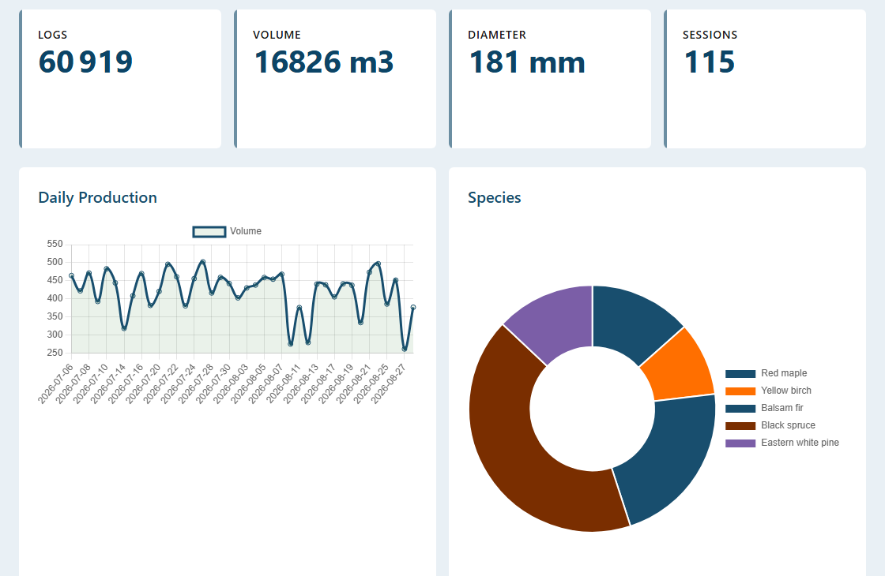
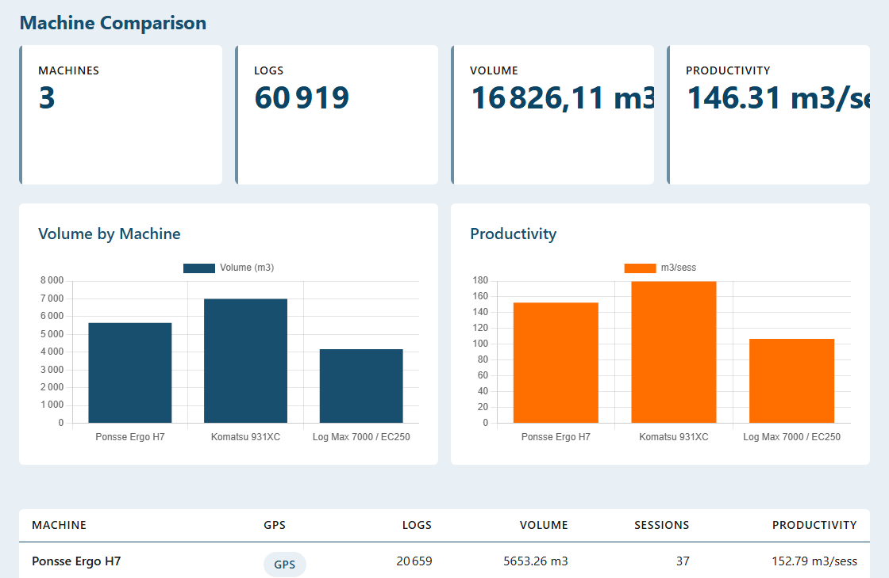
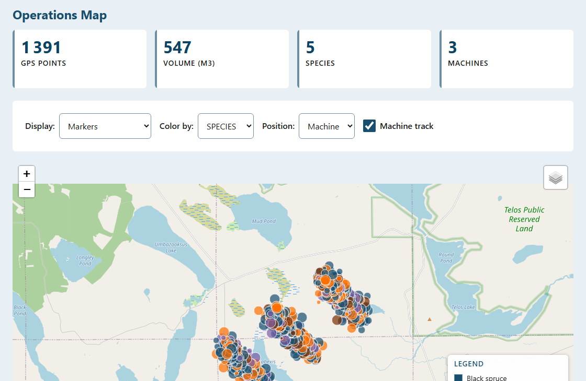
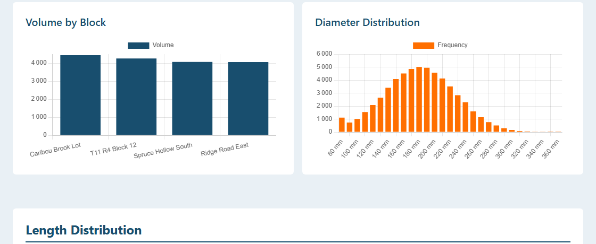
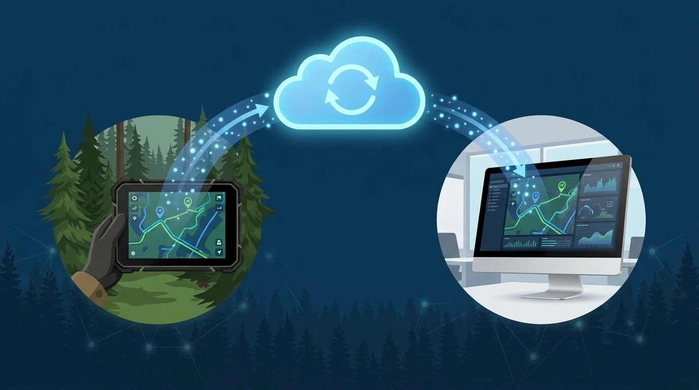
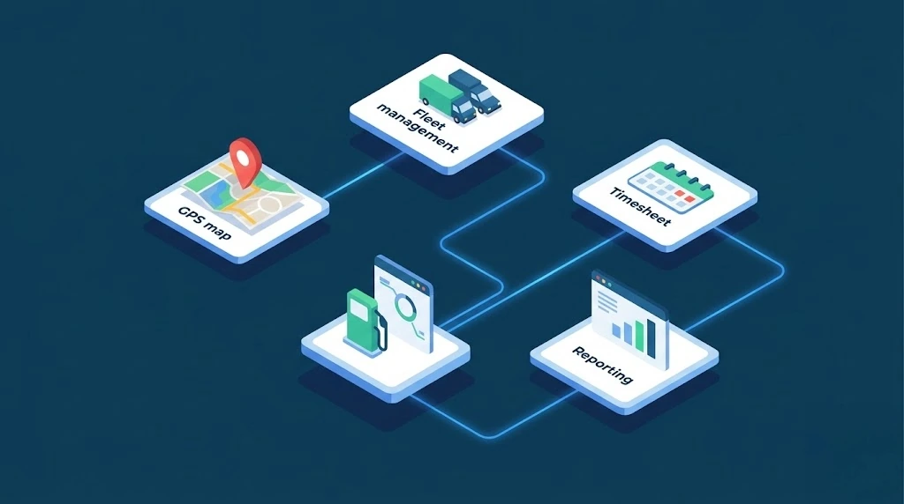

Every harvester head measures what it cuts, stem by stem: species, diameter, length, volume, operator, time of cut. That data almost always stays in the machine, in a file nobody opens back at the office.
SyncLogix reads it and brings it together in a single dashboard. Komatsu, Ponsse, Log Max and John Deere end up in the same view, with the same species and the same units, even though every manufacturer names them differently.
Nothing gets re-keyed. You drop in your machine files and the harvest comes into focus.

Load as many machines as you like. SyncLogix puts them side by side: volume, log count, working sessions and productivity in cubic metres per session.
This is the comparison your month-end reports never give you. Why one harvester turns out 181 m³ per session and another 110, on the same blocks, in the same species.

Filter by period, machine, operator, species or block. Every screen follows.
Volume by machine, block, species, product and operator. Daily output and the trend across the whole period. Average volume per stem.
Diameter and length distribution across the harvest. Compare the lengths you actually produced against your mill target lengths, using your own tolerances.
The diameter and length adjustment log, machine by machine, with the date of the last check. You know how long a head has gone without verification.
If your files carry no control stem, SyncLogix says so instead of showing an accuracy figure it made up. You always know what the number in front of you rests on.
On opening, an alert centre reads what you just loaded and tells you in one line what looks fine and what deserves a second look. No digging through charts.
Enter your price per product and harvested volume turns into value, broken down by machine and by product. Average price per cubic metre follows on its own.
When your machines record their position, SyncLogix puts every stem on the map and draws the machine track through the block.
Colour the points by species or by product to see how the stand actually laid out on the ground, and where the machine really worked.

One machine writes "Pulp 8", the other writes "Pulpwood 8 ft". Left alone, your report counts two products where there is only one.
SyncLogix groups equivalent labels on its own and lets you merge by hand the ones it did not recognise. Your product totals are right before you open the first chart.

All of our applications are cloud based and synchronised with each other. ForestLogix is the core of the system: every application talks to it, and the applications talk to one another, in both directions.
What your crews record in the field lands in ForestLogix. What SyncLogix reads from your machines lands there too, alongside GPS tracks, timesheets and work orders. You never export from one program to import into another: it is one system.

On the machine side, SyncLogix reads production data from the brands you are most likely to be running:
Two ways in, depending on what your machine gives you:
On the office and field side, it is built into the whole ForestLogix ecosystem:
On the hardware side, SyncLogix runs on rugged Windows and Android tablets.

Discover how SyncLogix can eliminate data loss and accelerate your operations.
Contact Us Request a Demo